Your discovery index, kept on your atmo provider account — the Discovery index section in its four states
One surface, sixteen frames. Current is main at cdc1da1 (the section as it ships: a file on this browser, a mode dial, paste or choose a file);
Proposed is claude/own-index-pds-build at d83d992. Both captured by scripts/mock-snaps.mjs against the same fixtures, in the default skin,
at 390×844 and 1280×900 (MOCKS.md), on /me with Advanced open and the section scrolled to. The population is built to stress the status line: a name long enough to wrap
with an emoji, a link long enough to break, the shipped index's counts in words, and a fetch that fails with the words a real PDS answers. The reader's repo slot, the blob it names and
the link host are live in the page (the journey's shim), so every Proposed frame is the result of a real read of the record — not a drawing.
Open decisions
- The mode dial's words at 390. Add mine — my file laid over Forage's; mine wins where they name the same thing is wider than a phone; the dial is now bounded to the page (it scrolled the account page sideways on main — found by this plan's journey) and its label clips. Shorter words, or the clip? This dial predates the plan.
- The paste box while kept on the account. A pasted or chosen file now replaces the file on the account (a link becomes the file), because the record wins over a device file and a paste that only touched the device was a silent nothing on the first frames. Say if you would rather the paste box hide while the index is kept on the account.
1 · On this browser only — the default, and what main has today
A file stored on this browser (gardeners-2026-09-14.json, 2 feeds, 3 jumpstarts), laid over Forage's. Proposed adds one dial under the mode: Where it is kept. The status line says which place is in use.
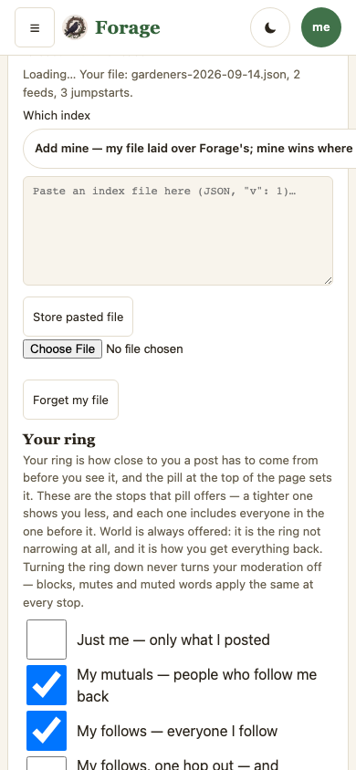
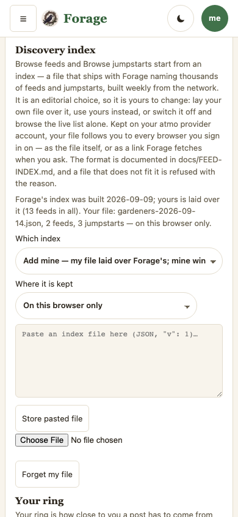
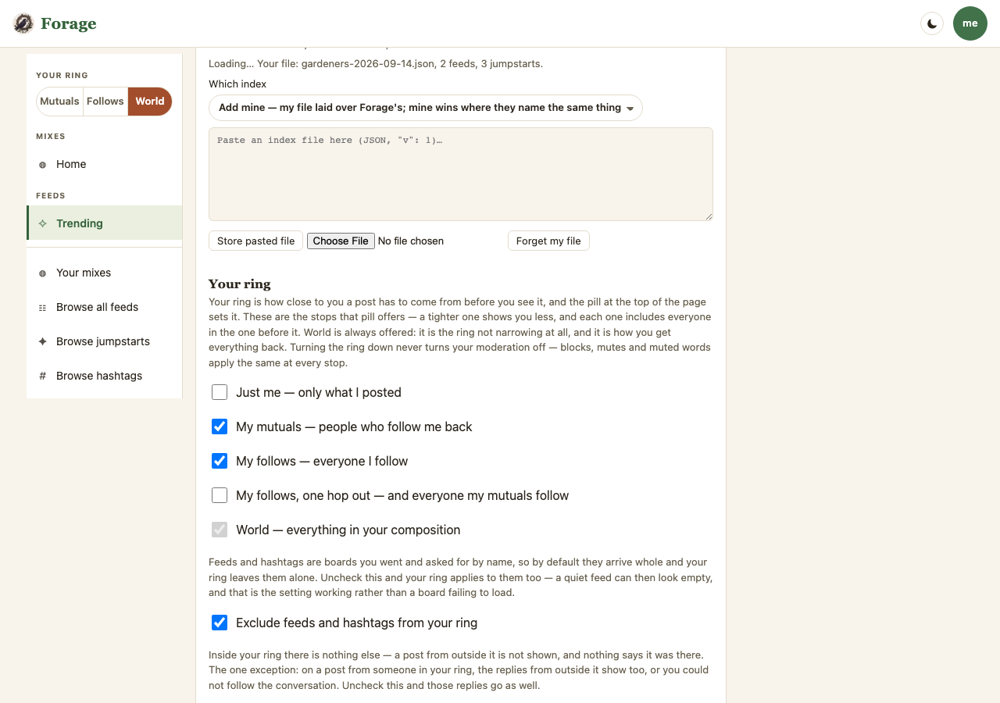
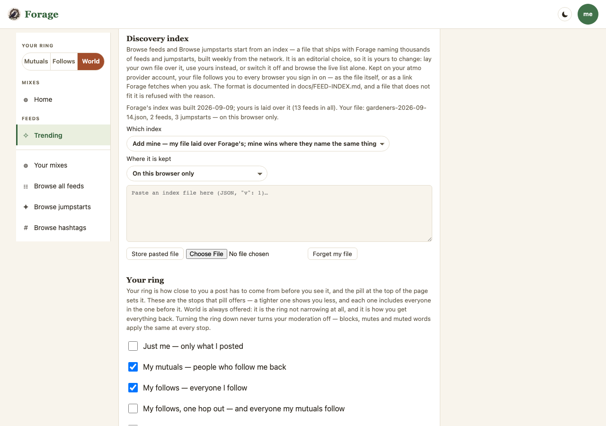
2 · Kept on your atmo provider account — the file
The record names a blob in her repo; this browser read the record at sign-in, fetched the file, and browse starts from hers. The status line carries the record's name (long, with an emoji, so it wraps) and when the copy was fetched; Refresh fetches it again; Forget my file is disabled because the device half holds nothing. Current is the same section with no file on this browser — on main the account is not consulted.
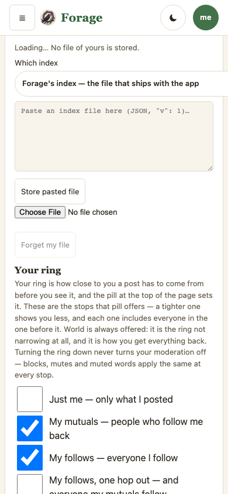
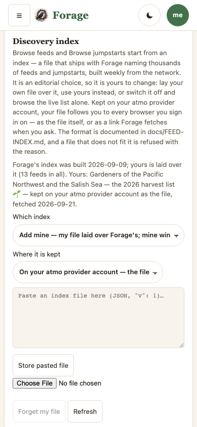
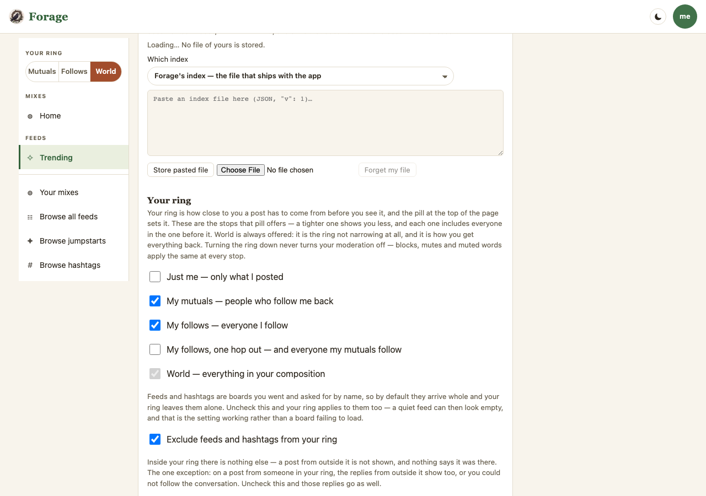
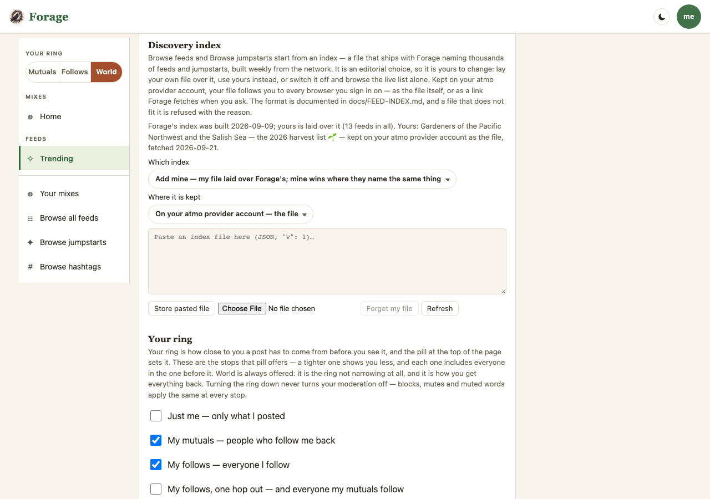
3 · Kept on your atmo provider account — a link
The record holds an https link; the link row is open with it, and Keep this link writes a new one. The mode is Replace, so Yours alone is in use. A link with no name is named by its link, once. Fetched on demand only — never polled (D5).

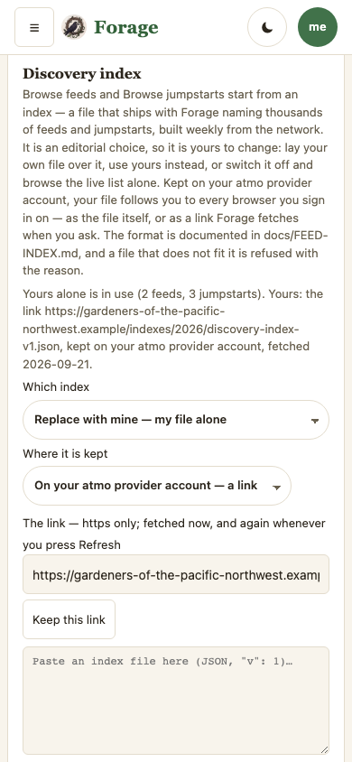

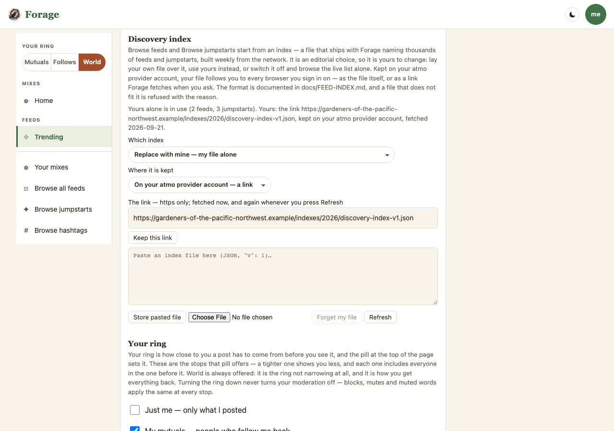
4 · Kept as the file, and the file cannot be fetched
The record is read but its blob answers HTTP 500. Forage's index is shown for this load and the status line says so, in the PDS's own words; the two dials still show her choice — nothing was rewritten (§ E). Refresh tries again.

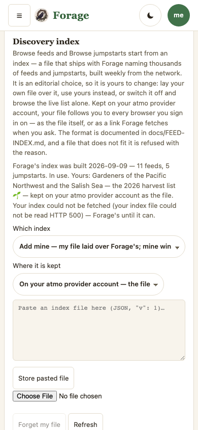

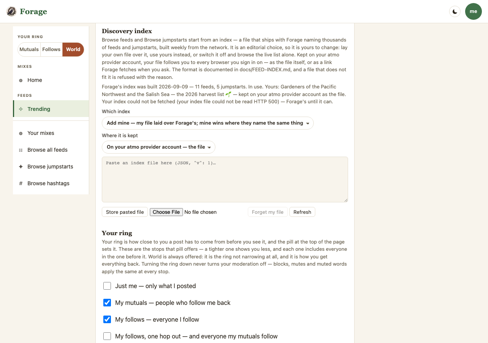
What the frames hold, and what they cannot
- The first Proposed capture of frame 3 showed the fallback sentence instead of a kept link (the mock's long host was not a served link in the journey's shim), a link with no name read its URL twice, and frame 4 leaked the lens'
lens:prefix into the reader's sentence. All three fixed, the frames re-captured. - The same capture showed the paste box doing nothing while the index is kept on the account — open decision 2 above; built as "replaces the file on the account", pinned by the journey.
- The Current frames are the section as it ships: the record on the account is never read on main, so frames 2–4's Current show No file of yours is stored — and every Current frame reads Loading…, because on main the status line is written once, before the index has loaded, and nothing repaints it. The branch repaints it when the store is ready (found by these frames; pinned by the guest journey).
- Not framed: the guest's sentence in place of the dial, a closed host named for CORS, an http link refused before any fetch, a mode change as a put in place, Off on this device, the tap floor at 390 — all held by
e2e/own-index-pds.workflow.mjs. The live proof (e2e/own-index-pds-live.workflow.mjs,LIVE=1) is Phase 5's second half.